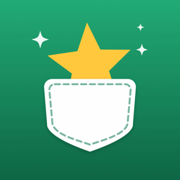

Hilfe & Kontakt
Fragen, Fehler oder Ideen? Schreib an office@wursol.com.
Wie ändere ich die Reihenfolge?
Halte einen Wunsch gedrückt und ziehe ihn an die gewünschte Stelle. Ganz oben steht, was du dir am meisten wünschst.
Wie markiere ich etwas als gekauft?
Wische den Wunsch nach rechts und tippe auf „Gekauft“, oder öffne ihn und tippe auf „Als gekauft markieren“. Gekauftes findest du über das Siegel-Symbol oben rechts.
Wie lösche ich einen Wunsch?
Wische ihn nach links und tippe auf „Löschen“. Direkt danach kannst du mit „Widerrufen“ alles rückgängig machen.
Ich habe versehentlich etwas gelöscht.
Gelöschte Wünsche bleiben 30 Tage lang erhalten: Zahnrad oben links → „Zuletzt gelöscht“ → nach rechts wischen → „Wiederherstellen“.
Wie ändere ich Sprache, Währung oder Zahlenformat?
Zahnrad oben links → „Sprache & Format“. Die Sprache öffnet die iOS-Einstellungen für Pocketwish; Währung (€, $, £, CHF) und Zahlenformat (1.234,56 oder 1,234.56) stellst du direkt in der App ein.
Wie lösche ich eine Kategorie?
Beim Hinzufügen oder Bearbeiten eines Wunschs die Kategorie gedrückt halten und „Kategorie löschen“ wählen.
Wie filtere ich nach Kategorie?
Tippe auf den Filter-Knopf links neben dem +. Du kannst mehrere Kategorien auswählen; die Summe oben passt sich an.
Meine Wünsche erscheinen nicht auf dem anderen Gerät.
Prüfe, ob du auf beiden Geräten mit derselben Apple-ID bei iCloud angemeldet bist und iCloud Drive aktiviert ist. Die Synchronisation kann ein paar Minuten dauern.
Wie ändere ich das Design?
Tippe oben links auf das Zahnrad und wähle „Klassisch“ oder „Candy“.
Help & contact
Questions, bugs or ideas? Write to office@wursol.com.
How do I change the order?
Touch and hold a wish, then drag it where you want it. The top is what you want most.
How do I mark something as bought?
Swipe the wish right and tap Bought, or open it and tap Mark as bought. Bought items are behind the seal button at the top right.
How do I delete a wish?
Swipe it left and tap Delete. Right after, you can tap Undo to bring it back.
I deleted something by mistake.
Deleted wishes are kept for 30 days: gear at the top left → Recently Deleted → swipe right → Restore.
How do I change the language, currency or number format?
Gear at the top left → Language & Format. Language opens the iOS Settings for Pocketwish; currency (€, $, £, CHF) and number format (1.234,56 or 1,234.56) are set right in the app.
How do I delete a tag?
While adding or editing a wish, touch and hold the tag and choose Delete Tag.
How do I filter by tag?
Tap the filter button to the left of +. You can pick several tags; the total at the top follows along.
My wishes don't show up on my other device.
Make sure both devices are signed in to iCloud with the same Apple ID and iCloud Drive is on. Syncing can take a few minutes.
How do I change the design?
Tap the gear at the top left and choose Classic or Candy.